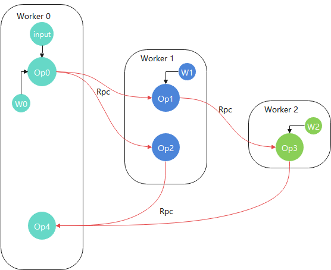

分布式图切分

概述
在大模型训练任务中，用户往往使用各类并行算法将计算任务分配到各个节点，以充分利用计算资源，例如通过MindSpore的算子级并行，流水线并行等特性。但是在某些场景下，用户需要根据自定义算法将图切分为多个子图，分发到不同进程分布式执行。MindSpore的分布式图切分特性从这一需求出发，提供了算子粒度的Python层API，让用户能自由进行图切分和构建分布式训练/推理等任务。
基本原理
分布式任务需要在一个集群中执行，MindSpore为了在分布式图切分场景中拥有更好的可扩展性和可靠性，复用了MindSpore内置的动态组网模块，此模块在不依赖OpenMPI进行训练和Parameter Server模式章节也有使用。
对于分布式图切分来说，每一个进程都代表一个计算节点(称之为Worker)，通过上述的动态组网模块，启动的调度节点(称之为Scheduler)可以让发现各个计算节点，进而组成一个计算集群。
在动态组网后，MindSpore会根据用户启动配置，为每个进程分配role和rank，即每个进程的角色和id，两者组成了每个进程的唯一标签，并且是Python层APIplace的入参。有了这层对应关系，用户可以通过调用place接口，对任意算子设置进程标签，MindSpore图编译模块处理后，将计算图切分成多个子图分发到不同进程上执行。place具体用法可参考Primitive.place以及Cell.place接口文档。
举例来说，经过分布式图切分后的计算拓扑图可能如下：

如上图所示，每个Worker上都有一部分用户已经切分的子图，拥有各自的权重和输入，各Worker间通过内置Rpc通信算子进行数据交互。
为了保证易用性和用户友好，MindSpore还支持用户只要对一份脚本作少许修改，即可启动动态组网和分布式训练(无需区分Worker还是Scheduler)。详见以下操作实践章节。
操作实践
以LeNet基于MNIST数据集在GPU上训练为例，将训练任务中图的不同部分拆分到不同计算节点上执行。你可以在这里下载到完整代码：https://gitee.com/mindspore/docs/tree/r2.0/docs/sample_code/distributed_graph_partition。
目录结构如下：
distributed_graph_partition/
├── lenet.py
├── run.sh
└── train.py
此教程不涉及跨物理节点启动，所有进程都在同一节点。对MindSpore来说，节点内和跨节点分布式图切分的实现是没有区别的：通过动态组网，图切分，图编译流程后，通过Rpc通信算子进行数据交互。
训练Python脚本准备
参考https://gitee.com/mindspore/models/tree/r2.0/research/cv/lenet，使用MNIST数据集，了解如何训练一个LeNet网络。下面按照步骤给出训练脚本各部分代码示例。
数据集加载
import mindspore.dataset as ds
import mindspore.dataset.transforms as C
import mindspore.dataset.vision as CV
from mindspore.common import dtype as mstype
from mindspore.dataset.vision import Inter
def create_dataset(data_path, batch_size=32, repeat_size=1
num_parallel_workers=1):
"""
create dataset for train or test
"""
# define dataset
mnist_ds = ds.MnistDataset(data_path)
resize_height, resize_width = 32, 32
rescale = 1.0 / 255.0
shift = 0.0
rescale_nml = 1 / 0.3081
shift_nml = -1 * 0.1307 / 0.3081
# define map operations
resize_op = CV.Resize((resize_height, resize_width), interpolation=Inter.LINEAR) # Bilinear mode
rescale_nml_op = CV.Rescale(rescale_nml, shift_nml)
rescale_op = CV.Rescale(rescale, shift)
hwc2chw_op = CV.HWC2CHW()
type_cast_op = C.TypeCast(mstype.int32)
# apply map operations on images
mnist_ds = mnist_ds.map(operations=type_cast_op, input_columns="label", num_parallel_workers=num_parallel_workers)
mnist_ds = mnist_ds.map(operations=resize_op, input_columns="image", num_parallel_workers=num_parallel_workers)
mnist_ds = mnist_ds.map(operations=rescale_op, input_columns="image", num_parallel_workers=num_parallel_workers)
mnist_ds = mnist_ds.map(operations=rescale_nml_op, input_columns="image", num_parallel_workers=num_parallel_workers)
mnist_ds = mnist_ds.map(operations=hwc2chw_op, input_columns="image", num_parallel_workers=num_parallel_workers)
# apply DatasetOps
buffer_size = 10000
mnist_ds = mnist_ds.shuffle(buffer_size=buffer_size)
mnist_ds = mnist_ds.batch(batch_size, drop_remainder=True)
mnist_ds = mnist_ds.repeat(repeat_size)
return mnist_ds
以上代码创建MNIST数据集。
构建LeNet网络
为了对一个单机单卡任务进行切图，我们需要先构造一个单机单卡副本：
import mindspore.nn as nn
from mindspore.common.initializer import TruncatedNormal
def conv(in_channels, out_channels, kernel_size, stride=1, padding=0):
"""weight initial for conv layer"""
weight = weight_variable()
return nn.Conv2d(in_channels, out_channels,
kernel_size=kernel_size, stride=stride, padding=padding,
weight_init=weight, has_bias=False, pad_mode="valid")
def fc_with_initialize(input_channels, out_channels):
"""weight initial for fc layer"""
weight = weight_variable()
bias = weight_variable()
return nn.Dense(input_channels, out_channels, weight, bias)
def weight_variable():
"""weight initial"""
return TruncatedNormal(0.02)
class LeNet(nn.Cell):
def __init__(self, num_class=10, channel=1):
super(LeNet, self).__init__()
self.num_class = num_class
self.conv1 = conv(channel, 6, 5)
self.conv2 = conv(6, 16, 5)
self.fc1 = fc_with_initialize(16 * 5 * 5, 120)
self.fc2 = fc_with_initialize(120, 84)
self.fc3 = fc_with_initialize(84, self.num_class)
self.relu = nn.ReLU()
self.max_pool2d = nn.MaxPool2d(kernel_size=2, stride=2)
self.flatten = nn.Flatten()
def construct(self, x):
x = self.conv1(x)
x = self.relu(x)
x = self.max_pool2d(x)
x = self.conv2(x)
x = self.relu(x)
x = self.max_pool2d(x)
x = self.flatten(x)
x = self.fc1(x)
x = self.relu(x)
x = self.fc2(x)
x = self.relu(x)
x = self.fc3(x)
return x
调用接口进行分布式图切分
此次训练任务我们切分fc1到Worker 0，fc2到Worker 1，fc3到Worker 2，conv1到Worker 3，conv2到Worker 4进程。
在LeNet.__init__函数中，添加以下切图语句，即可做到分布式图切分：
class LeNet(nn.Cell):
def __init__(self, num_class=10, channel=1):
super(LeNet, self).__init__()
...
self.fc1.place("MS_WORKER", 0)
self.fc2.place("MS_WORKER", 1)
self.fc3.place("MS_WORKER", 2)
self.conv1.place("MS_WORKER", 3)
self.conv2.place("MS_WORKER", 4)
...
...
place接口第一个入参role为进程角色，第二个参数为进程rank，即代表算子在此类角色的某进程上执行。目前place接口只支持MS_WORKER角色，代表着上述的Worker X进程。
由此可见，用户只需将自定义算法通过一个单机副本描述出来，再通过place接口设置算子所在计算节点标签，即可快速实现一个分布式训练任务。此方式的优势在于：
1.用户无需单独对每个计算节点编写执行脚本，只需一个脚本MindSpore即可执行分布式任务
2.提供了更加通用和用户友好的接口，通过place接口，用户能直观的描述自己的分布式训练算法
定义优化器和损失函数
import mindspore.nn as nn
def get_optimizer(net, lr=0.01):
momentum = 0.9
mom_optimizer = nn.Momentum(filter(lambda x: x.requires_grad, net.get_parameters()), lr, momentum)
return mom_optimizer
def get_loss():
return nn.SoftmaxCrossEntropyWithLogits(sparse=True, reduction='mean')
执行训练代码
训练代码入口脚本train.py：
import mindspore as ms
from mindspore import set_seed
from mindspore.train.metrics import Accuracy
from mindspore.train import Model
from mindspore.train.callback import LossMonitor, TimeMonitor
from mindspore.communication import init, get_rank
ms.set_context(mode=ms.GRAPH_MODE, device_target='GPU')
init()
net = LeNet()
opt = get_optimizer(net)
criterion = get_loss()
model = Model(net, criterion, opt, metrics={"Accuracy": Accuracy()})
print("================= Start training =================", flush=True)
ds_train = create_dataset(os.path.join(os.getenv("DATA_PATH"), 'train'))
model.train(10, ds_train, callbacks=[LossMonitor(), TimeMonitor()],dataset_sink_mode=False)
print("================= Start testing =================", flush=True)
ds_eval = create_dataset(os.path.join(os.getenv("DATA_PATH"), 'test'))
acc = model.eval(ds_eval, dataset_sink_mode=False)
if get_rank() == 0:
print("Accuracy is:", acc)
以上代码先训练，后推理，其中所有过程都是以分布式的方式执行的。
在分布式图切分场景下，用户必须调用
mindspore.communication.init，此接口是MindSpore的动态组网模块入口，用于帮助组建计算集群，通信算子初始化等。若没有调用，则MindSpore会执行单机单卡训练，即place接口不会生效。由于某些进程上只有部分子图执行，因此它们的推理精度或者loss并没有意义。用户只需关注
Worker 0上的精度即可。
训练Shell脚本准备
启动Scheduler和Worker进程
由于是在节点内启动多个进程，因此只需要通过一个Shell脚本启动一个Scheduler进程和多个Worker进程。此动态组网在这两章节也有详细介绍和类似用法：不依赖OpenMPI进行训练和Parameter Server模式，对于脚本中的环境变量含义以及用法，可以参考Parameter Server模式章节。
run.sh执行脚本如下：
execute_path=$(pwd)
self_path=$(dirname $0)
# Set public environment.
export MS_WORKER_NUM=5
export MS_SCHED_HOST=127.0.0.1
export MS_SCHED_PORT=8118
export DATA_PATH=$1
# Launch scheduler.
export MS_ROLE=MS_SCHED
rm -rf ${execute_path}/sched/
mkdir ${execute_path}/sched/
cd ${execute_path}/sched/ || exit
python ${self_path}/../train.py > sched.log 2>&1 &
sched_pid=`echo $!`
# Launch workers.
export MS_ROLE=MS_WORKER
worker_pids=()
for((i=0;i<$MS_WORKER_NUM;i++));
do
rm -rf ${execute_path}/worker_$i/
mkdir ${execute_path}/worker_$i/
cd ${execute_path}/worker_$i/ || exit
python ${self_path}/../train.py > worker_$i.log 2>&1 &
worker_pids[${i}]=`echo $!`
done
# Wait for workers to exit.
for((i=0; i<${MS_WORKER_NUM}; i++)); do
wait ${worker_pids[i]}
status=`echo $?`
if [ "${status}" != "0" ]; then
echo "[ERROR] train failed. Failed to wait worker_{$i}, status: ${status}"
exit 1
fi
done
# Wait for scheduler to exit.
if [ "${status}" != "0" ]; then
wait ${sched_pid}
status=`echo $?`
if [ "${status}" != "0" ]; then
echo "[ERROR] train failed. Failed to wait scheduler, status: ${status}"
exit 1
fi
fi
exit 0
以上脚本中，export MS_WORKER_NUM=5代表此次分布式执行需要启动5个MS_WORKER进程；export MS_SCHED_HOST=127.0.0.1代表Scheduler的地址为127.0.0.1；export MS_SCHED_PORT=8118代表Scheduler开放端口为8118，所有进程会向此端口连接进行动态组网。
上述的环境变量对于Worker和Scheduler进程都要导出，然后分别导出对应角色，启动对应角色的进程：export MS_ROLE=MS_SCHED后启动Scheduler进程；export MS_ROLE=MS_WORKER后循环启动MS_WORKER_NUM个Worker进程。
注意每个进程都为后台执行，因此在脚本最后会有等待进程退出语句。
执行指令
bash run.sh [MNIST_DATA_PATH]
查看执行结果
查看精度执行指令：
grep -rn "Accuracy" */*.log
结果：
Accuracy is: {'Accuracy': 0.9888822115384616}
说明分布式图切分对LeNet训练和推理结果没有影响。
总结
MindSpore分布式图切分特性提供给用户算子粒度的place接口，支持用户根据自定义算法对计算图进行切分，通过动态组网，执行各类场景下的分布式训练等任务。
用户只需要对单机单卡副本作出以下几点修改，即可启动任务：
在单机单卡副本最前面调用
mindspore.communication.init接口，启动动态组网。根据用户算法，对图中算子或者layer调用
nn.Cell或者ops.Primitive的place接口，设置算子所在的进程标签。通过Shell脚本启动
Worker和Scheduler进程，执行分布式任务。
目前place接口为有限支持状态，进阶用法处于开发阶段，欢迎用户在MindSpore官网提出各类意见或issue。
place接口在当前存在以下限制：
入参
role只支持设置为MS_WORKER。这是因为在分布式图切分场景下每个节点都是计算节点Worker，设置其他角色暂不需要。无法和参数服务器，数据并行，自动并行混合使用。分布式图切分后每个进程的计算图不一致，这三种特性都存在进程间图或者算子的拷贝，与本特性叠加执行可能出现未知的错误。混合使用特性将会在后续版本中支持。
控制流+分布式图切分处于有限支持状态，可能会出现未错误。此场景也会在后续版本中支持。
在
Pynative模式下不支持place接口。